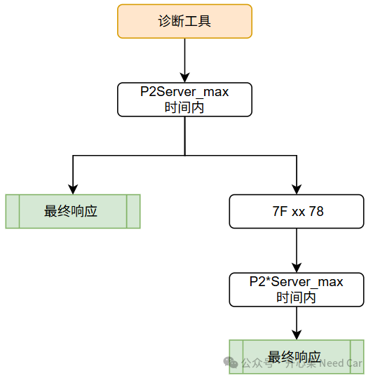
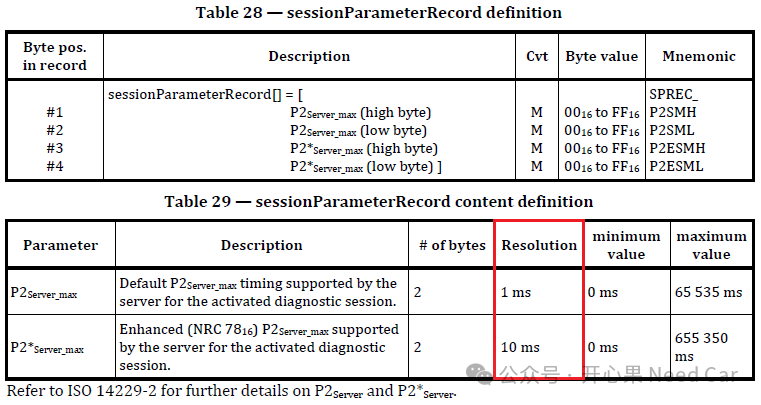

开心果 Need Car · 2026-10-12T06:22:00+08:00 · 微信原文
本文介绍UDS诊断服务0x10（DiagnosticSessionControl）的功能及数据格式，深入解析P2与P2的含义、区别及超时机制，并通过实际报文示例说明P2Server_max和P2Server_max的Resolution计算方法。
一、DiagnosticSessionControl（0x10）服务介绍及数据格式
在UDS（Unified Diagnostic Services，ISO 14229）协议中，DiagnosticSessionControl（SID 0x10） 是最基础、最常用的诊断服务之一。该服务用于控制ECU进入不同的诊断会话模式，以便Tester获得相应的诊断权限。常见的诊断会话包括：
Default Session（0x01）
Programming Session（0x02）
Extended Diagnostic Session（0x03）
Safety System Diagnostic Session（0x04）
ECU上电后默认处于Default Session，通过发送0x10服务，Tester可以请求ECU切换到其他会话模式，以执行软件下载、参数配置、故障诊断等高级操作。
（一）请求报文格式
10 xx，其中，10 = Service ID，xx = DiagnosticSessionTyp。例如：10 02，表示请求ECU进入Programming Session。
（二）正响应报文格式
50 xx P2_H P2_L P2*_H P2*_L
其中，50 = Positive Response SID，xx = 当前会话类型，P2_H/L = P2Server_max，P2*_H/L =P2*Server_max
例如，50 02 00 64 01 F4表示进入Programming Session成功，P2Server_max*= 0x0064，P2*Server_max = 0x01F4。这里的P2和P2*参数非常重要，它们定义了Tester与ECU之间的诊断超时时间规则。
二、P2与P2*的概念
在UDS通信过程中，Tester发送请求后需要等待ECU响应。为了保证通信双方对等待时间有统一认知，ISO 14229定义了两个关键时间参数：
（一）P2Server_max
P2Server_max表示：ECU在正常情况下，从收到请求到返回响应所允许的最大时间。如果ECU能够快速完成请求处理，则必须在P2时间内返回最终响应。
例如：Tester -> ECU : 22 F1 90
读取VIN信息时，ECU通常只需几毫秒即可处理完成，因此会在P2时间内直接返回：62 F1 90 ...
所以，P2主要约束的是正常处理场景。
（二）P2*Server_max
有些诊断操作耗时较长，例如：Flash下载、擦除Flash、大量数据计算（比如：验签计算）等
当ECU无法在P2时间内完成处理时，可以先返回：7F xx 78，即：
NRC = 0x78（Response Pending），表示请求已收到，ECU还在处理，请继续等待。
此时,Tester不应超时退出，而应继续等待最终响应。
P2*Server_max定义的就是：ECU发送Response Pending后，允许的最长处理时间。例如,P2 = 50ms,P2* = 5000ms。表示正常响应最长50ms，返回0x78后最长可以等待5秒，如果超过P2*仍无最终响应，则Tester可认为诊断失败。
（三） P2与P2*关系
可简单理解为：

因此，P2 用于正常响应，P2* 用于Response Pending场景。这是UDS诊断超时机制的核心设计。
三、实例解析P2Server_max Resolution与P2*Server_max Resolution
工程实践中最容易出错的地方，并不是P2和P2*的概念，而是它们的分辨率（Resolution）。
ISO 14229规定：

也就是说：P2实际时间 = P2数值 × 1ms，P2*实际时间 = P2*数值 × 10ms，而P2*并不是直接以毫秒存储。
（一）实例
Tester发送：10 02，请求进入Programming Session。
ECU返回：50 02 00 64 01 F4，解析如下：
Step1：解析P2，00 64，转换为十进制：0x0064 = 100，根据标准：Resolution = 1ms，因此，P2 = 100 × 1ms = 100ms
Step2：解析P2*，01 F4，转换为十进制：0x01F4 = 500，根据标准：
Resolution = 10ms，因此，P2* = 500 × 10ms = 5000ms = 5s
最终结果：P2Server_max = 100ms，P2*Server_max = 5000ms
（二）常见错误
很多工程师会直接将0x01F4 = 500理解为P2* = 500ms，这是错误的。
原因在于：P2采用1ms分辨率，P2*采用10ms分辨率。所以，500 × 10ms = 5000ms，而不是500ms，这一点在诊断工具开发、AUTOSAR DCM配置以及测试报告分析时经常出现误判，因此必须特别注意。
DiagnosticSessionControl（0x10）不仅用于切换诊断会话，同时还向Tester告知当前会话下的超时参数P2和P2*。其中：P2Server_max Resolution = 1ms，P2*Server_max Resolution = 10ms。因此，对于响应50 02 00 64 01 F4，应解析为P2 = 100ms，P2* = 5000ms。P2用于约束ECU的正常响应时间，而P2*用于Response Pending（NRC 0x78）场景下的扩展等待时间。正确理解两者及其Resolution，是进行UDS协议开发、AUTOSAR DCM配置和诊断测试分析的基础。
往期精彩回顾